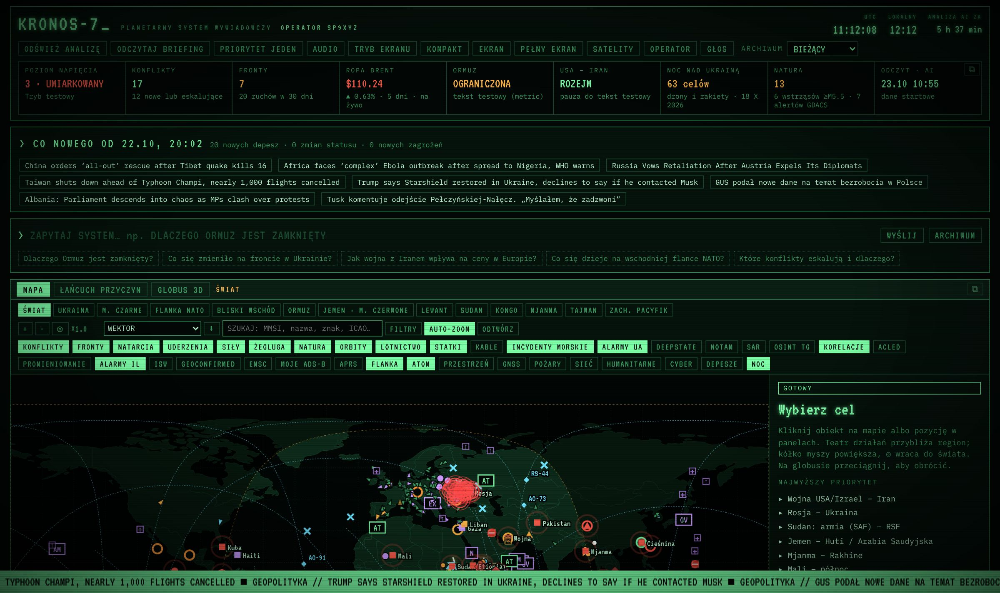
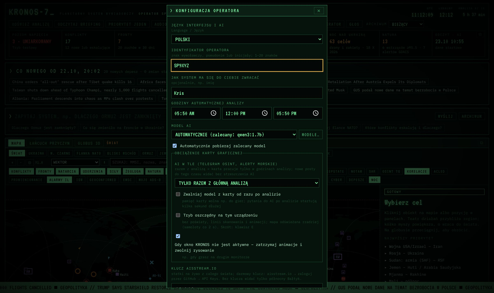
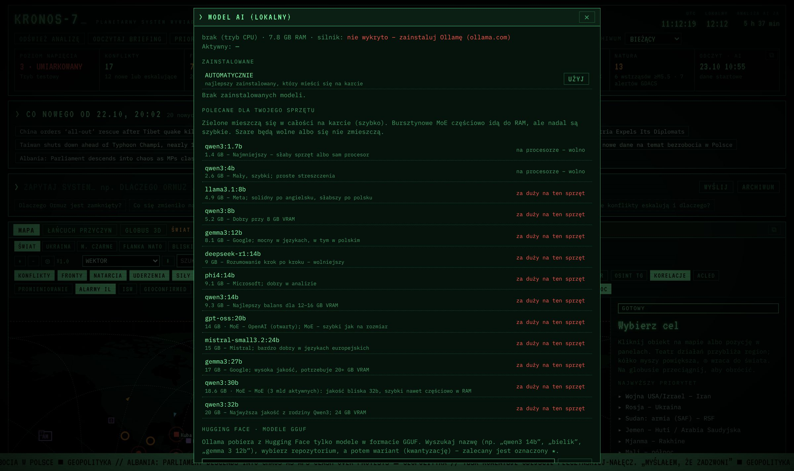
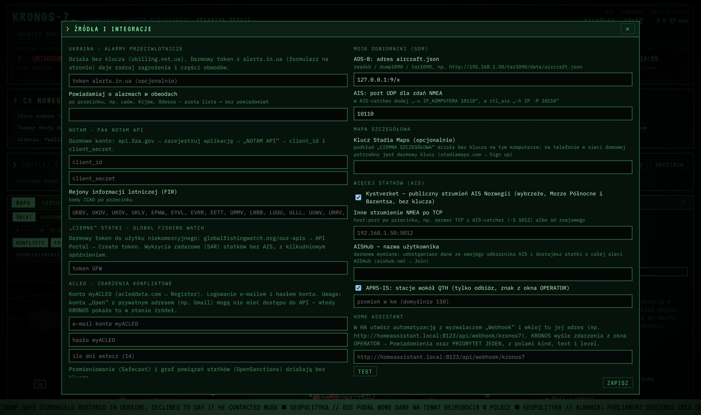
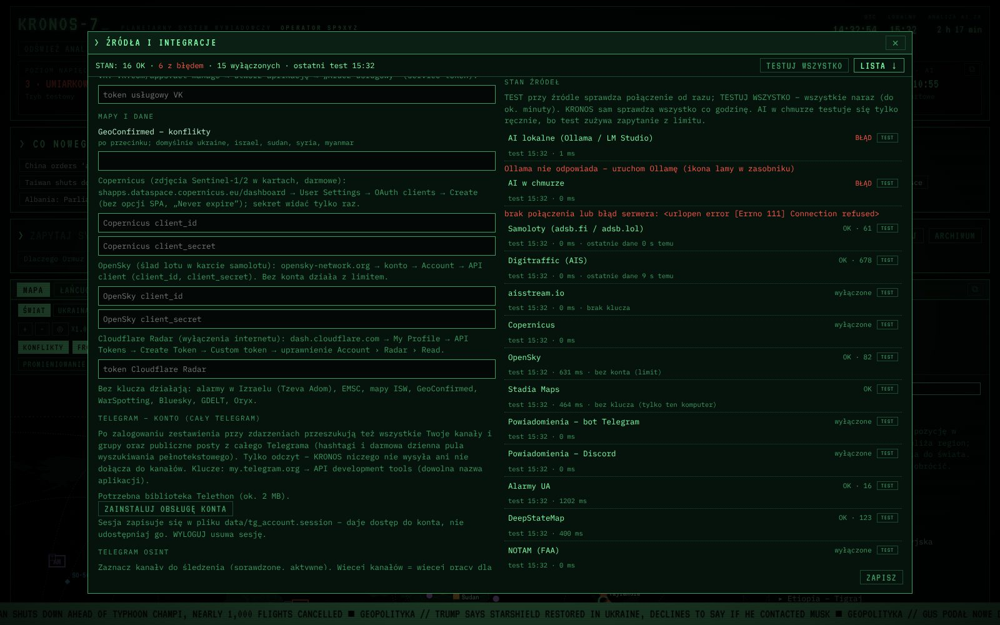

KRONOS-7_
PLANETARNY SYSTEM WYWIADOWCZY
Wersja programu 3.22.3 · instrukcja z dnia 23.10.2026
Instalacja, konfiguracja krok po kroku, skąd wziąć każdy klucz API, rozwiązywanie problemów.

KRONOS-7 działa na Twoim komputerze. Dane pobiera z publicznych źródeł, a analizę robi lokalny model AI (Ollama / LM Studio) albo – jeśli tak ustawisz – model w chmurze. Oceny AI to hipotezy, nie oficjalne wskaźniki.
data/settings.json na Twoim komputerze. Nikomu nie wysyłaj tego pliku – są w nim Twoje klucze i hasła.
KRONOS-7 to lokalny terminal wywiadowczy w stylu komputerów pokładowych z filmów SF. Zbiera wiadomości i otwarte dane z całego świata – depesze, samoloty wojskowe, statki, alarmy, trzęsienia ziemi, satelity, rynki, kanały Telegrama – i pokazuje je na mapie. Lokalny model AI łączy wiadomości o tym samym zdarzeniu, ocenia wiarygodność, pisze briefing i odpowiada na pytania.
| Element | Minimum | Zalecane |
|---|---|---|
| System | Windows 10/11, Linux lub macOS | Windows 11 |
| Przeglądarka | Chrome, Edge, Firefox, Brave | Chrome lub Edge (polecenia głosowe, okna na drugim monitorze) |
| Karta graficzna | niepotrzebna – AI ruszy na procesorze, ale wolno | NVIDIA z 12–16 GB VRAM (np. RTX 4070 Ti / 5080) |
| Pamięć RAM | 8 GB | 32 GB |
| Dysk | ok. 5 GB (program + mały model) | 30 GB (model 14b, mapy offline, zdjęcia z Telegrama) |
| Internet | potrzebny do pobierania danych; AI lokalne działa bez internetu | |
Bez żadnego klucza działa większość: depesze z ok. 80 serwisów RSS, samoloty wojskowe (adsb.fi / adsb.lol), statki na północnym Bałtyku i u wybrzeży Norwegii, alarmy w Ukrainie i Izraelu, mapa frontu DeepState, mapy ISW, GeoConfirmed, WarSpotting, trzęsienia ziemi, promieniowanie, satelity, pożary z satelitów NASA, bezpieczeństwo morskie, rynki, kanały Telegrama, Bluesky i GDELT.
Darmowe klucze (rejestracja na stronie dostawcy) dokładają m.in.: statki z całego świata (aisstream.io), zdjęcia satelitarne Sentinel (Copernicus), wyłączenia internetu (Cloudflare), ślad lotu (OpenSky), „ciemne” statki z radaru (Global Fishing Watch), wyszukiwanie w YouTube, VK i Reddit, powiadomienia na telefon, AI w chmurze. Szczegóły: rozdział 9.
github.com/vipersq/Kronos-7, kliknij zielony przycisk Code → Download ZIP (albo użyj pliku ZIP, który dostałeś). Rozpakuj go do zwykłego folderu, np. C:\KRONOS-7. Nie uruchamiaj programu bezpośrednio z wnętrza ZIP-a.start.bat (dwuklik). Otworzy się czarne okno – nie zamykaj go, to jest serwer KRONOS-a.python.org/downloads i przy instalacji zaznacz „Add python.exe to PATH”, potem uruchom start.bat jeszcze raz.requirements.txt (pycountry, h3, edge-tts, telethon). Robi to tylko raz.data\.no_ollama.http://127.0.0.1:7707. Jeśli nie – wpisz ten adres ręcznie.start.bat. Żeby zamknąć KRONOS-a, zamknij czarne okno serwera.ollama.com/download).git clone https://github.com/vipersq/Kronos-7.git, potem cd Kronos-7 i ./start.sh.http://127.0.0.1:7707.git pull.data zostaje nietknięty – ustawienia, klucze, historia i pobrane mapy zostają.start.bat. Jeśli nowa wersja wymaga nowych bibliotek, a coś nie działa, usuń plik data\.deps_ok i uruchom ponownie – dodatki zainstalują się od nowa.Jeśli wolisz LM Studio: uruchom w nim serwer lokalny (zakładka Developer → Start server, port 1234). KRONOS wykryje go sam. Modele pobierasz wtedy w oknie LM Studio, a w KRONOS-ie tylko je wybierasz.
| Przycisk | Co robi |
|---|---|
| ODŚWIEŻ ANALIZĘ | Uruchamia analizę AI teraz (karta graficzna będzie zajęta kilka minut). |
| ODCZYTAJ BRIEFING | Czyta briefing na głos (głos ustawisz w OPERATOR → DŹWIĘKI I GŁOS LEKTORA). |
| PRIORYTET JEDEN | Najważniejsze zdarzenia krytyczne w jednym oknie. |
| AUDIO | Włącza dźwięki terminala. |
| TRYB EKRANU / KOMPAKT / EKRAN / PEŁNY EKRAN | Pokaz slajdów na pełnym ekranie; widok zwarty; szerokość, wielkość tekstu, wysokość mapy, tryb XENEON EDGE; pełny ekran przeglądarki. |
| SATELITY | Wybór grup satelitów na mapie i przypinanie pojedynczych. |
| OPERATOR | Wszystkie ustawienia (rozdział 5). |
| GŁOS | Polecenia głosowe (Alt+V), np. „pokaż Ormuz”, „sitrep Bałtyk”. |
| ARCHIWUM | Powrót do dowolnego wcześniejszego odczytu. |
/): MMSI, IMO, nazwa statku, ICAO, znak, rejestracja samolotu, znaki APRS.Włącz warstwę GEOCONFIRMED i kliknij punkt. Karta od razu pokazuje:
Strumień depesz, barometr rynkowy, żegluga, trend napięcia, kalendarz, rejestr konfliktów, fronty, noc nad Ukrainą, uderzenia dalekiego zasięgu, ruchy sił, flanka NATO, niebo, statki, alarmy UA · NOTAM · SAR (tu też Izrael, trzęsienia ziemi, wyłączenia internetu), OSINT · Telegram, straty sprzętu · WarSpotting, zdarzenia złożone, bezpieczeństwo morskie, prognozy, obiekty jądrowe, sankcje, humanitarne, cyber, sieć, ostrzeżenia podróżne, zagrożenia naturalne, starty rakiet, SITREP, historia, przeloty nad QTH, orbity, status systemu, źródła.
Każdy panel ma przycisk ⧉ – otwiera go w osobnym oknie, które przeciągniesz na inny monitor.
W polu ZAPYTAJ SYSTEM… wpisz pytanie po polsku, np. „Co się zmieniło na froncie w Ukrainie?” albo „Co działo się w Ormuzie w zeszłym tygodniu?” – AI odpowiada na podstawie bieżących danych i archiwum.

| Pole | Co wpisać / zaznaczyć |
|---|---|
| Język interfejsu i AI | POLSKI albo ENGLISH. |
| Identyfikator operatora | Znak wywoławczy lub pseudonim (1–20 znaków). |
| Jak system ma się zwracać | Opcjonalnie imię – używane w powitaniu i briefingu. |
| Godziny automatycznej analizy | Do 3 godzin (domyślnie 05:50 i 17:50). W tych godzinach karta graficzna będzie zajęta. |
| Model AI · MODELE… | AUTOMATYCZNIE (najlepszy pasujący) albo wybrany model. Rozdział 6. |
| Automatycznie pobieraj zalecany model | Zostaw zaznaczone, chyba że sam wybierasz modele. |
| AI w tle | TYLKO RAZEM Z GŁÓWNĄ ANALIZĄ (karta pracuje tylko w godzinach analiz) albo NA BIEŻĄCO (posty z Telegrama i alerty morskie streszczane co ok. 10 min). |
| Zwalniaj model z karty po analizie | Zaznacz, jeśli grasz – pamięć karty zwolni się od razu po analizie. |
| Tryb oszczędny | Bez poświaty i animacji, mapa rzadziej. Klawisz E. |
| Gdy okno nie jest aktywne | Zatrzymuje animacje, gdy KRONOS jest w tle. |
| Klucz aisstream.io | Statki z całego świata – rozdział 9.1. |
| QTH | Twoja lokalizacja: lokator Maidenhead (np. IO91) albo współrzędne 51.07, -1.79. Potrzebne do przelotów satelitów i APRS. |
| Zasięg statków | CAŁY ŚWIAT albo TYLKO OBSERWOWANE REJONY (mniej danych). |
| Powiadomienia na telefon | Telegram (token bota + ID czatu) i/lub Discord (webhook) – rozdział 10. Pod spodem wybierasz rodzaje zdarzeń. WYŚLIJ TEST sprawdza połączenie. |
| Telefon i tablet w sieci domowej | Udostępnia terminal w sieci lokalnej, wymaga PIN-u (4–8 cyfr) i ponownego uruchomienia – rozdział 14. |
| Dźwięk | Głośność, szum tła, terkot drukowanego tekstu. |
Po zmianach kliknij ZAPISZ.
Otwórz OPERATOR → MODELE….

ollama.com/library (np. qwen3:30b, gemma3:12b) albo wklej link z Hugging Face i kliknij POBIERZ.| Pamięć karty (VRAM) | Model wybierany automatycznie | Rozmiar |
|---|---|---|
| 24 GB i więcej | qwen3:32b | 20 GB |
| 14–23 GB | qwen3:14b | 9,3 GB |
| 8–13 GB | qwen3:8b | 5,2 GB |
| 5–7 GB | qwen3:4b | 2,6 GB |
| bez karty | według RAM: 8b / 4b / 1.7b | – |
bielik, i kliknij SZUKAJ. Widać tylko modele GGUF – tylko takie Ollama potrafi pobrać.huggingface.co i zaloguj się.Token Hugging Face (Settings → Access Tokens → typ „Read”) jest opcjonalny – służy tylko do przeglądania prywatnych repozytoriów w wyszukiwarce.
Jeśli Twój komputer jest słaby, analizę może robić mocniejszy model w chmurze. Do chmury idą tylko publiczne depesze, posty i dane z mapy. Gdy skończy się limit albo zniknie internet, KRONOS sam wraca na model lokalny.
| Dostawca | Koszt | Skąd wziąć klucz | Model domyślny |
|---|---|---|---|
| Google Gemini | darmowy limit | aistudio.google.com → zaloguj kontem Google → Get API key → Create API key. | gemini-2.5-flash |
| GitHub Models | darmowy limit | github.com → avatar → Settings → Developer settings → Personal access tokens → Fine-grained tokens → Generate new token → w „Permissions” ustaw Models: Read-only. | openai/gpt-4.1-mini |
| Groq | darmowy limit | console.groq.com → zaloguj → API Keys → Create API Key. | llama-3.3-70b-versatile |
| OpenRouter | modele „:free” | openrouter.ai → zaloguj → Keys → Create Key. Modele z końcówką :free są bezpłatne (z limitem). | meta-llama/llama-3.3-70b-instruct:free |
| OpenAI | płatny | platform.openai.com → API keys → Create new secret key (wymaga doładowania konta). | gpt-4.1-mini |
| Anthropic Claude | płatny | console.anthropic.com → API Keys → Create Key (wymaga doładowania konta). | claude-sonnet-4-5 |
| Własny | – | Dowolny serwer zgodny z OpenAI: adres bazowy kończący się zwykle na /v1. | – |
Co się dzieje przy błędach: przekroczony limit (429) → 10 min na modelu lokalnym; odrzucony klucz (401/403) → 1 godzina; brak sieci → 3 minuty. Potem KRONOS próbuje chmury znowu.
Klucze do źródeł danych wpisujesz w OPERATOR → ŹRÓDŁA I INTEGRACJE…. Na dole tego okna jest STAN ŹRÓDEŁ – przy każdym źródle widać „OK” z liczbą danych, „wyłączone” (brak klucza) albo opis błędu.

| Źródło | Co daje | Klucz | Rozdz. |
|---|---|---|---|
| aisstream.io | Statki AIS z całego świata na żywo | darmowy | 9.1 |
| alerts.in.ua | Rodzaj zagrożenia przy alarmach w Ukrainie | darmowy, opcjonalny | 9.2 |
| Copernicus | Zdjęcia Sentinel-2 / radar Sentinel-1 / SWIR w kartach | darmowy | 9.3 |
| Cloudflare Radar | Wyłączenia i anomalie internetu na świecie | darmowy | 9.4 |
| OpenSky | Ślad lotu w karcie samolotu | darmowy, opcjonalny | 9.5 |
| Global Fishing Watch | „Ciemne” statki wykryte radarem SAR | darmowy | 9.6 |
| YouTube | Filmy w zestawieniach POSTY I ZDJĘCIA | darmowy | 9.7 |
| VK | Posty z VK w zestawieniach | darmowy | 9.8 |
| Posty z Reddita w zestawieniach | darmowy, wymaga zatwierdzenia | 9.9 | |
| Stadia Maps | Mapa szczegółowa na telefonie | darmowy, opcjonalny | 9.10 |
| FAA NOTAM | NOTAM-y (zamknięte przestrzenie, strzelania) | darmowy* | 9.11 |
| ACLED | Zdarzenia konfliktowe z ofiarami | tylko konta instytucji* | 9.12 |
| Telegram (konto) | Wyszukiwanie w całym Telegramie | darmowy | 11.2 |
| Bot Telegram / Discord | Powiadomienia na telefon | darmowy | 10 |
| AISHub, SDR, poczta, HA | Twoje odbiorniki, alerty e-mail, dom | – | 12 |
* FAA i ACLED mają ograniczenia opisane w ich punktach.

Co sprawdza test: AI lokalne (czy Ollama / LM Studio odpowiada i ma model), AI w chmurze, samoloty, statki (Digitraffic, aisstream.io), wszystkie źródła wywiadowcze, kanały Telegrama i konto Telegram, wyszukiwarki (Bluesky, Reddit, GDELT, YouTube, VK), Copernicus (logowanie), OpenSky, Stadia Maps, bot Telegram (czy widzi Twój czat – bez wysyłania wiadomości), Discord (bez wysyłania), pocztę, odbiorniki SDR, Home Assistant.
Alarmy w Ukrainie (ubilling.net.ua), alarmy w Izraelu (Tzeva Adom), DeepStateMap, mapy ISW, GeoConfirmed (konflikty ustawiasz w polu „GeoConfirmed – konflikty”, domyślnie ukraine, israel, sudan, syria, myanmar), WarSpotting, EMSC (trzęsienia ziemi), Safecast (promieniowanie), OpenSanctions (graf powiązań statków), Oryx, Bluesky, GDELT, adsb.fi / adsb.lol, Digitraffic, Kystverket, NASA (zdjęcia i pożary), CelesTrak, źródła morskie (NGA, UKHO, IMB, ReCAAP), kanały Telegrama, ok. 80 kanałów RSS.
Pole „Wyszukiwarki przy zdarzeniach” – lista po przecinku, które serwisy przeszukiwać w sekcji POSTY I ZDJĘCIA: bluesky,reddit,gdelt,youtube,vk. Bluesky i GDELT nie potrzebują klucza; YouTube i VK działają dopiero po wpisaniu klucza. Pole „subreddity” ogranicza Reddita do wybranych, np. UkraineWarVideoReport,CombatFootage.
Po wpisaniu każdego klucza kliknij ZAPISZ i po minucie sprawdź STAN ŹRÓDEŁ.
aisstream.io i kliknij Sign in – logowanie przez konto GitHub (jeśli nie masz, załóż na github.com, to darmowe).alerts.in.ua/api-request i wypełnij formularz prośby o token (cel: prywatny, niekomercyjny; nazwa projektu np. „KRONOS-7”).Lwów, Kijów, Odessa. Pusta lista = bez powiadomień.dataspace.copernicus.eu → Register, potwierdź e-mail. Karta płatnicza nie jest potrzebna.shapps.dataspace.copernicus.eu/dashboard (osobny panel – na głównej stronie kluczy nie ma) i zaloguj się tym samym kontem.KRONOS-7. Ważność: Never expire (potwierdź ostrzeżenie). Opcji SPA nie zaznaczaj.„Credits” na stronie Copernicusa dotyczą dokupienia większego limitu lub płatnych usług chmurowych – do KRONOS-a niepotrzebne. Zdjęcie pobiera się tylko po kliknięciu przycisku.
dash.cloudflare.com/sign-up (nie musisz mieć żadnej strony ani domeny).KRONOS-7. W Permissions ustaw: Account · Radar · Read.opensky-network.org (Register) i zaloguj się.opensky-network.org/my-opensky/account.credentials.json – otwórz go w Notatniku.clientId i clientSecret do pól OpenSky client_id i client_secret.credentials.json i wpisz dane jeszcze raz. Do tego czasu ślad lotu działa bez konta.globalfishingwatch.org/our-apis → API Portal, zarejestruj się / zaloguj.Dane radarowe mają kilka dni opóźnienia – to cecha źródła, nie błąd.
console.cloud.google.com i zaloguj się kontem Google.KRONOS-7 → Create.youtube w polu „Wyszukiwarki przy zdarzeniach”.vk.com (wymaga numeru telefonu) i zaloguj się.vk.com/apps?act=manage (albo dev.vk.com → Moje aplikacje) → utwórz aplikację (typ: strona / Web, dowolna nazwa).vk w polu „Wyszukiwarki przy zdarzeniach”.reddit.com i wejdź na reddit.com/prefs/apps.KRONOS-7, typ script, „redirect uri”: http://localhost → create app.Bez klucza KRONOS też próbuje czytać Reddita, ale Reddit często takie zapytania blokuje.
stadiamaps.com → Sign up (darmowy plan).api.faa.gov → zarejestruj się → Register an application → wybierz NOTAM API.UKBV, EPWW, LLLL.Jeśli nie możesz się zarejestrować, zostaw puste – reszta programu działa normalnie.
Konto założone na prywatny adres (Gmail, Outlook, Windows Live itp.) dostaje poziom „Open”, który nie ma dostępu do API. API mają poziomy Research, Partner i Enterprise, przydzielane po domenie e-maila instytucji (uczelnia, organizacja, firma z licencją). Z kontem Open KRONOS pokaże w stanie źródeł błąd 403 – wtedy zostaw pola puste.
acleddata.com → Register tym adresem.KRONOS może wysyłać na telefon: wzrost napięcia, briefing, krążące samoloty, kody alarmowe, sankcje, STS, kable, „ciemne” statki, incydenty morskie, zdarzenia złożone, alarmy UA i IL, promieniowanie, przeloty satelitów. Rodzaje zaznaczasz w OPERATOR pod polami powiadomień. Limit: 1 wiadomość na 5 s i 40 na godzinę.
/newbot.bot (np. kronos7_kriss_bot).123456789:AA… – skopiuj go do pola „token bota Telegram”.W ŹRÓDŁA I INTEGRACJE → TELEGRAM OSINT zaznaczasz kanały do śledzenia z katalogu ponad 100 sprawdzonych kanałów (oficjalne ukraińskie i rosyjskie, media, milblogerzy, OSINT, Bliski Wschód, cyber). Przyciski: DOMYŚLNE / WSZYSTKIE / ŻADNE. Własne kanały dopisz w polu „Inne kanały” – nazwa z adresu t.me/NAZWA, kanał musi mieć publiczny podgląd.
Więcej kanałów = więcej pracy dla AI przy analizie. Każdy kanał ma oznaczony rodzaj (oficjalny, media, milbloger, propaganda), który AI bierze pod uwagę przy ocenie wiarygodności.
my.telegram.org, podaj numer telefonu (z kierunkowym, np. +44…) i kod, który przyjdzie w aplikacji Telegram.KRONOS-7, Short name np. kronos7, Platform: Desktop. Zapisz.data/tg_account.session – daje pełny dostęp do Twojego konta. Nigdy go nikomu nie wysyłaj. WYLOGUJ usuwa sesję. api_hash też traktuj jak hasło.Filtr śmieci: wyniki z całego Telegrama przechodzą przez filtr – odrzucane są kanały „towarzyskie”, kasyna, narkotyki i inny spam, który dopisuje nazwy miast i hashtagi; do zestawienia trafiają tylko wpisy o ataku/wybuchu (a z całego Telegrama – także z nazwą miejsca). Prywatne rozmowy nigdy nie trafiają do zestawień. Zdjęcia w zestawieniach są domyślnie rozmyte.
Po zalogowaniu zestawienia POSTY I ZDJĘCIA przeszukują dodatkowo wszystkie Twoje kanały i grupy oraz publiczne posty z całego Telegrama (hashtagi bez limitu, pełny tekst w darmowej dziennej puli).
| Co | Jak podłączyć |
|---|---|
| ADS-B | Pole „ADS-B”: adres pliku aircraft.json z readsb / dump1090 / tar1090, np. http://192.168.1.50/tar1090/data/aircraft.json. Samoloty pojawią się w warstwie MOJE ADS-B. |
| AIS (UDP) | Pole „AIS” – port UDP (domyślnie 10110). W AIS-catcher dodaj -u IP_KOMPUTERA 10110, w rtl_ais -h IP -P 10110. |
| AIS (TCP) | „Inne strumienie NMEA po TCP”: host:port, np. serwer TCP z AIS-catcher (-S 5012). |
| Kystverket | Zaznacz – publiczny strumień AIS Norwegii, bez klucza. |
| AISHub | Darmowa wymiana: udostępniasz dane ze swojego odbiornika AIS i dostajesz statki z całej sieci. Rejestracja aishub.net → Join, potem wpisz nazwę użytkownika. |
| APRS-IS | Zaznacz i ustaw promień w km – stacje APRS wokół QTH (tylko odbiór, znak z okna OPERATOR). |
imap.gmail.com, port 993, adres e-mail, hasło aplikacji (nie zwykłe hasło), folder INBOX.kronos7.http://homeassistant.local:8123/api/webhook/kronos7 → TEST.kind, text, level. Przykład: warunek {{ trigger.json.kind == 'priority' }} → czerwone światło.Każdy obejrzany kafelek mapy zostaje na dysku (data/tiles) i drugi raz ładuje się natychmiast, bez internetu. Żeby pobrać mapę z góry:
OSM NOCNA nie pozwala na pobieranie hurtowe – zapamiętuje tylko obejrzane miejsca.
E: bez poświaty i animacji, do 10 klatek/s.start.bat ponownie. Przy pierwszym starcie Windows może zapytać o zaporę – zezwól w sieci prywatnej.http://192.168.1.20:7707 – otwórz go na telefonie (ta sama sieć Wi-Fi), podaj PIN.http://127.0.0.1:7707/widget (po angielsku ?lang=en) – poziom napięcia, odliczanie analizy, liczniki, przelot satelity. Do iCUE (XENEON EDGE), tabletu albo drugiego monitora.
Dwuklik na streamdeck/dist/com.vipersq.kronos7.streamDeckPlugin (Stream Deck 6.4+). Akcje w kategorii KRONOS-7: poziom napięcia, analiza AI, teatr działań, warstwa mapy, licznik kontaktów, przelot satelity.
http://127.0.0.1:7707/api/cmd?do=…&arg=…, np. do=theater&arg=hz (Ormuz), do=eco&arg=toggle. Dostępne: theater, layer, zoom, replay, briefing, sitrep, ask, stop, globe, autozoom, alert, audio, view, event, sat, voice, eco.
OPERATOR → DŹWIĘKI I GŁOS LEKTORA…: Microsoft (Marek, Zofia – najbardziej naturalne, wymagają internetu; kliknij ZAINSTALUJ), Piper (offline, na procesorze; kliknij POBIERZ przy głosie) albo głos przeglądarki. Tam też własne dźwięki (MP3/WAV/OGG/M4A/FLAC do 15 MB).
| Plik / folder | Co zawiera |
|---|---|
data/settings.json | Twoje ustawienia i wszystkie klucze – nie udostępniaj. |
data/tg_account.session | Sesja konta Telegram – pełny dostęp do konta, nie udostępniaj. |
data/state.json, data/archive/ | Bieżący odczyt i 120 poprzednich. |
data/history.db | Historia: pozycje (48 h), wskaźniki (rok), zdarzenia (90 dni). |
data/tiles/ | Mapy offline (może być duży – można usunąć). |
data/media/ | Zdjęcia i filmy z Telegrama (10 dni, max 1,5 GB). |
data/sounds/, data/tts/ | Twoje dźwięki, głosy Piper. |
config.json | Ustawienia domyślne (port, kanały RSS, katalog modeli). Ustawienia z okna OPERATOR mają pierwszeństwo. |
Wystarczy skopiować folder data (bez tiles i media, jeśli zależy Ci na miejscu). Przy przenoszeniu na nowy komputer: zainstaluj KRONOS-a i wklej folder data.
data.Pierwsze miejsce do sprawdzenia: OPERATOR → ŹRÓDŁA I INTEGRACJE → TESTUJ WSZYSTKO (rozdział 8) oraz komunikaty w czarnym oknie serwera.
| Objaw | Co zrobić |
|---|---|
| Strona się nie otwiera | Sprawdź, czy czarne okno serwera jest otwarte. Wpisz ręcznie http://127.0.0.1:7707. Jeśli port jest zajęty, zmień "port" w config.json. |
| Brak analizy AI | Czy Ollama działa (ikona lamy w zasobniku)? OPERATOR → MODELE… – czy jest zainstalowany model? Usuń data\.no_ollama, jeśli wcześniej odmówiłeś instalacji. |
| Model nie chce się pobrać z Hugging Face | Tylko modele GGUF. Dla Llamy/Gemmy: akceptacja licencji + klucz Ollamy w HF (rozdział 6). Warianty podzielone na części nie działają. |
| Karta graficzna ciągle pracuje / głośna | OPERATOR: „AI w tle – tylko razem z główną analizą”, „Zwalniaj model po analizie”, tryb oszczędny (E), „Gdy okno nie jest aktywne”. |
| Mapa się tnie | Tryb oszczędny (E); podkład WEKTOR zamiast SATELITA; pobierz mapy offline; w FILTRACH wyłącz zbędne typy statków. |
| Widać statki tylko na Bałtyku | Brak klucza aisstream.io (9.1). |
| ACLED: „odmowa dostępu (HTTP 403)” | Konto „Open” bez API – patrz 9.12. Zostaw pola puste. |
| Copernicus: czerwony napis zamiast zdjęcia | Sprawdź client_id/secret (9.3). Możliwy też brak bezchmurnego zdjęcia z ostatnich dni – spróbuj RADAR S-1. |
| Test: „wyłączone” | Źródło nie ma klucza albo nie jest włączone – to nie błąd. Wpisz klucz (rozdział 9), ZAPISZ, TEST. |
| Test: „czeka na pierwsze dane” | Strumień (AIS, APRS) dopiero się łączy albo terminal był zamknięty – sprawdź ponownie za minutę. |
| Reddit / GDELT: błąd 403 / 429 | Serwis ogranicza zapytania. GDELT – poczekaj; Reddit – klucz (9.9). |
| Powiadomienia nie przychodzą | Czy napisałeś do bota „start”? Czy ID czatu jest liczbą od @userinfobot? Kliknij WYŚLIJ TEST. Czy zaznaczone są rodzaje powiadomień? |
| Brak głosu briefingu | DŹWIĘKI I GŁOS LEKTORA → zainstaluj głosy Microsoft albo pobierz Pipera; albo dodaj polski głos w Windows (Ustawienia → Czas i język → Mowa). |
| Telegram konto: błąd logowania | Numer z kierunkowym (+44…). Kod przychodzi w aplikacji Telegram, nie SMS-em. api_id to liczba, api_hash – 32 znaki. |
| W zestawieniu POSTY I ZDJĘCIA pojawiają się śmieci (reklamy, „randki”) | Od v3.22.1 filtrowane automatycznie. Jeśli coś się prześlizgnie – zdjęcia są rozmyte; daj znać, jakie słowa miał ten post, dopiszę je do filtra. |
| Po kliknięciu ŁAŃCUCH PRZYCZYN widać nadal mapę | Naprawione w v3.22.2 – przy podkładach kafelkowych (CIEMNA SZCZEGÓŁOWA, SATELITA, OSM) mapa zasłaniała graf. Po aktualizacji odśwież stronę (Ctrl+F5). |
| Po aktualizacji coś nie działa | Usuń data\.deps_ok i uruchom start.bat ponownie. W przeglądarce Ctrl+F5. |
| Klawisz | Działanie |
|---|---|
E | Tryb oszczędny wł./wył. |
/ | Wyszukiwarka na mapie |
Alt+V | Polecenia głosowe |
Esc | Zamknij okno / wyjdź z trybu ekranu |
F11 | Pełny ekran przeglądarki |
← → | Poprzednie/następne zdjęcie w podglądzie |
Enter | Wyślij pytanie / SITREP |
| Adres | Co to |
|---|---|
127.0.0.1:7707 | Terminal |
…/widget | Widżet |
…/api/cmd?do=… | Sterowanie |
…/api/deck | Stan dla Stream Decka |
| Usługa | Adres | Wpisz w KRONOS-ie |
|---|---|---|
| aisstream.io | aisstream.io → API Keys | OPERATOR |
| Bot Telegram | @BotFather, @userinfobot | OPERATOR |
| Discord | kanał → Integracje → Webhooki | OPERATOR |
| AI w chmurze | aistudio.google.com · console.groq.com · openrouter.ai · github.com | OPERATOR → AI W CHMURZE |
| Copernicus | shapps.dataspace.copernicus.eu/dashboard → User Settings | ŹRÓDŁA I INTEGRACJE |
| Cloudflare Radar | dash.cloudflare.com → My Profile → API Tokens | ŹRÓDŁA I INTEGRACJE |
| OpenSky | opensky-network.org/my-opensky/account | ŹRÓDŁA I INTEGRACJE |
| Global Fishing Watch | globalfishingwatch.org/our-apis | ŹRÓDŁA I INTEGRACJE |
| YouTube | console.cloud.google.com | ŹRÓDŁA I INTEGRACJE |
| VK | vk.com/apps?act=manage | ŹRÓDŁA I INTEGRACJE |
| reddit.com/prefs/apps | ŹRÓDŁA I INTEGRACJE | |
| alerts.in.ua | alerts.in.ua/api-request | ŹRÓDŁA I INTEGRACJE |
| Stadia Maps | stadiamaps.com | ŹRÓDŁA I INTEGRACJE |
| Telegram (konto) | my.telegram.org → API development tools | ŹRÓDŁA I INTEGRACJE |
| Gmail (IMAP) | Konto Google → Bezpieczeństwo → Hasła do aplikacji | ŹRÓDŁA I INTEGRACJE |
| Hugging Face | huggingface.co → Settings → SSH and GPG Keys | OPERATOR → MODELE… |
Strony dostawców czasem zmieniają wygląd i nazwy menu – jeśli coś wygląda inaczej, szukaj na ich stronie słów „API”, „API key”, „Token” albo „Developer”. Instrukcja dotyczy KRONOS-7 v3.22.3.